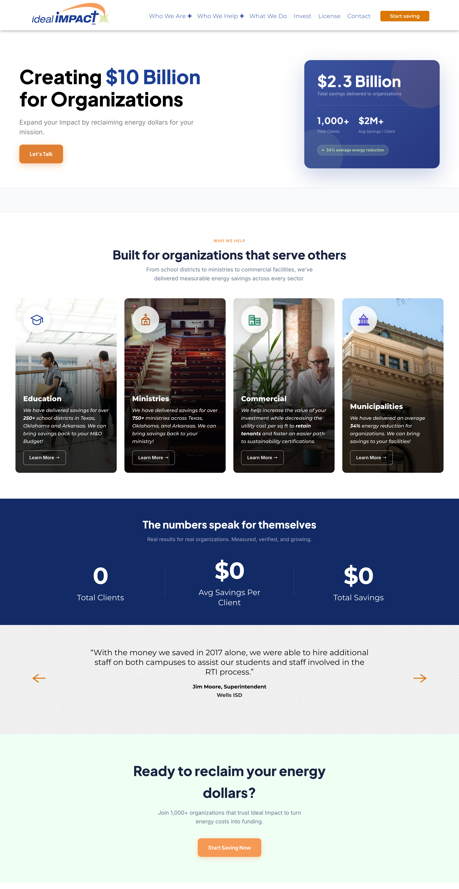

A full website redesign for an energy savings company that had outgrown its digital presence. Built to serve five client types, protect the sales process, and turn curious visitors into conversations.

Project Overview
Ideal Impact helps organizations across education, ministry, commercial, and municipal sectors reclaim energy dollars and redirect them toward their mission. The old website told a narrower story: schools and ministries in Texas and Oklahoma. As the company expanded into commercial real estate and municipalities, the site became a liability.
As the sole designer, I led the full redesign from initial audit through Figma design and WordPress build. The work touched every part of the site including the information architecture, visual design system, messaging hierarchy, and client sector structure.
Core Objectives
The Problem
The Commercial Sales team brought a specific problem to the table. Prospective commercial clients were visiting the site and walking away confused. The old site spoke exclusively to schools and ministries and a property manager or facilities director landing on it had no way to see themselves as a potential client. There was no commercial section, no commercial language, and no signal that Ideal Impact's model even applied to them.
The old site had zero content addressing commercial real estate or property management clients. The sales team had no digital asset to point new prospects to.
Visitors across all sectors struggled to understand what Ideal Impact actually does. The value proposition was buried and the service model wasn't explained in a way that made sense on first visit.
The company was actively serving Education, Ministries, Commercial, Higher Education, and Municipalities. The site only acknowledged two of them, leaving three client types with no point of entry.
The old site was built on a generic page builder template with inconsistent typography, competing CTAs, and no clear visual hierarchy. It looked like a placeholder rather than a company with $2.3B in delivered savings.
Stakeholder Research
The most defining constraint of this project came directly from the CEO and executive team: do not give everything away. Ideal Impact's business model relies on the inside sales team to walk prospective clients through the specifics of how their program works. A site that explains too much removes the reason to have that conversation.
This created a deliberate design challenge. The site needed to be informative enough that a commercial property manager or school superintendent could confirm Ideal Impact was worth their time, but restrained enough that the natural next step was always picking up the phone or filling out a form.
I called this the 5,000 ft view. Every design decision about what to show, what to withhold, and how to sequence information across pages was filtered through that lens. The result is a site built to generate qualified conversations, not replace them.
Research Sources
Design Process
Documented every failure point on the old site: missing sectors, confusing messaging, template design debt, and broken IA.
Stakeholder sessions with the sales team, CEO, and executive team to define the 5,000 ft view and five-sector architecture.
10 rounds of Figma iterations refining the design system, messaging hierarchy, and sector pages to find the right balance.
Translated the final Figma designs into a live WordPress site, maintaining design fidelity across all pages and devices.
Design Solutions
Restructured the entire site around five distinct client types: Education, Ministries, Commercial, Higher Education, and Municipalities. Each sector now has its own dedicated space with language, proof points, and CTAs tailored to that specific audience. Commercial clients can finally see themselves on the site.
Replaced vague aspiration ("Over $10 Billion back into schools") with verified proof: $2.3B in total savings delivered, 1,000+ clients served, $2M+ average savings per client, 34% average energy reduction. The new hero section builds trust before a visitor reads a single word of body copy.
Every page was designed to answer "what do you do?" and "does this apply to me?" without answering "how does your model work?" The information hierarchy was engineered to generate qualified curiosity. All roads lead to a single outcome: a conversation with the inside sales team.
Outcome
Ideal Impact's new site reflects what the company actually is: a proven, data-backed energy savings partner for five distinct types of organizations. The design system is intentional, the messaging is precise, and every client type has a clear entry point. Most importantly, the site does its job without doing too much. It earns the conversation, and then it gets out of the way.
← Back to All Work